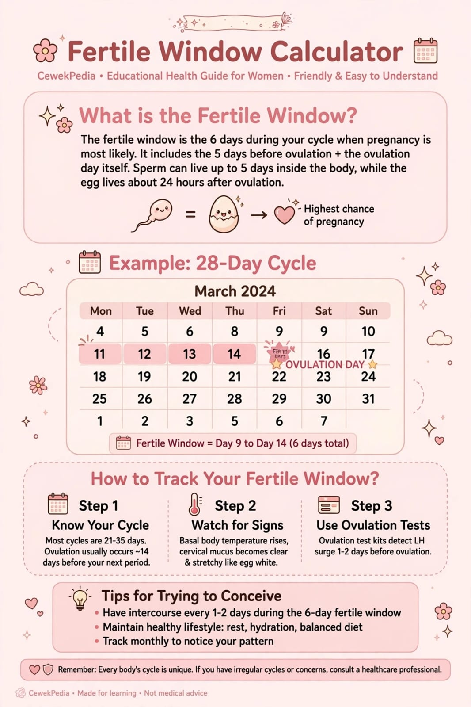

Ingin mengenali pola siklus menstruasi sendiri? Kalkulator masa subur CewekPedia membantu memberikan perkiraan rentang masa subur, waktu ovulasi, dan jadwal haid berikutnya berdasarkan tanggal haid terakhir serta panjang siklus yang kamu pilih.

Bagaimana cara menghitung masa subur?
Dalam siklus menstruasi, ovulasi adalah proses ketika ovarium melepaskan sel telur. Pada perkiraan kalender, ovulasi sering diperkirakan terjadi sekitar 14 hari sebelum menstruasi berikutnya. Namun, waktunya bisa berbeda pada setiap orang dan setiap siklus.
Rentang masa subur umumnya diperkirakan mencakup lima hari sebelum ovulasi hingga hari ovulasi. Kalkulator menggunakan pendekatan kalender tersebut, bukan pengukuran langsung terhadap ovulasi.
Contoh perhitungan siklus 28 hari
Jika hari pertama menstruasi adalah tanggal 1 dan siklusmu biasanya 28 hari, kalkulator memperkirakan haid berikutnya sekitar 28 hari setelah tanggal tersebut. Ovulasi kemudian diperkirakan sekitar 14 hari sebelum haid berikutnya, sedangkan rentang masa subur dihitung dari lima hari sebelumnya sampai hari ovulasi.
Contoh ini hanya ilustrasi. Tanggal sebenarnya dapat maju atau mundur, bahkan pada orang yang biasanya memiliki siklus teratur.
1. Apakah kalkulator masa subur selalu akurat?
Tidak. Kalkulator kalender hanya memberikan perkiraan berdasarkan panjang siklus. Stres, perubahan pola tidur, kondisi hormonal, penyakit, dan faktor lain dapat menggeser waktu ovulasi. Pada siklus tidak teratur, perkiraan kalender menjadi lebih sulit.
2. Apakah masa subur hanya satu hari?
Tidak selalu. Peluang kehamilan dapat muncul selama beberapa hari di sekitar ovulasi karena sperma bisa bertahan di saluran reproduksi selama beberapa hari, sementara sel telur biasanya dapat dibuahi dalam waktu yang lebih singkat setelah dilepaskan. Karena itu, masa subur sering dijelaskan sebagai rentang beberapa hari, bukan satu tanggal pasti.
3. Bagaimana jika siklus haid tidak teratur?
Jika panjang siklus sering berubah, hasil kalkulator mungkin tidak menggambarkan waktu ovulasi yang sebenarnya. Mencatat tanggal menstruasi selama beberapa bulan bisa membantu mengenali pola, tetapi tidak memastikan ovulasi. Pertimbangkan berkonsultasi dengan tenaga kesehatan jika siklus sangat tidak teratur atau kamu mengalami keluhan yang mengkhawatirkan.
Kesimpulan
Kalkulator masa subur CewekPedia bisa menjadi langkah awal untuk memahami siklus menstruasi. Gunakan hasilnya sebagai perkiraan saja, karena kalender tidak dapat memastikan hari ovulasi secara tepat.